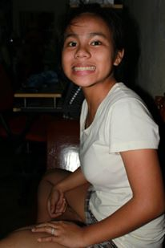
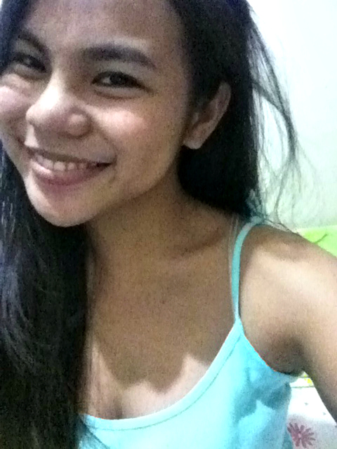

The Long and Winding Road of My Life
.JPG) The best years of one's life are her childhood days. The sweet memories of this phase makes me very sentimental once in a while. My childhood is an awesome one, even though my parents were very strict, since I am an only girl. I already have my curfew, my schedule for studying, for playing outside, and for other activities. Nevertheless, I still enjoyed it and made the most out of it. During those times, my only responsibilities were to study, eat and sleep on time. I love the carefree feeling of being a child. I also loved to travel and see new places since I was a kid. Also, sports already started to be a great part of my life then.
The best years of one's life are her childhood days. The sweet memories of this phase makes me very sentimental once in a while. My childhood is an awesome one, even though my parents were very strict, since I am an only girl. I already have my curfew, my schedule for studying, for playing outside, and for other activities. Nevertheless, I still enjoyed it and made the most out of it. During those times, my only responsibilities were to study, eat and sleep on time. I love the carefree feeling of being a child. I also loved to travel and see new places since I was a kid. Also, sports already started to be a great part of my life then.
 If you asked me what is the most memorable phase in my life, I have to say it would be my highschool days. So many things happened in highschool. It helped me to nurture my dreams, have an open mind about everything that I hear and most of all, develop my skills for socialization. I also started to make decisions for myself, little ones, of course. Still, my mom and dad were always the ones to decide. They always know better, though sometimes I cannot see that. I studied in a catholic high school. It was quite hard, since the regulations were very strictly implemented. I really did want to study there at first, but since my other siblings graduated there, I had no choice but to follow their foot steps. In the end, I did enjoyed highschool and right now, I just miss my HS friends. :(
 Many young adults, before stepping into college, can imagine vivid pictures of what their experiences would be like. I, for one, imagined myself having high grades and graduating with latin honors (ambitious eh?). But right now, I can say that imagining things is one easy job, fulfilling them is another. Later did I realize that college life is a tough road to success. Right now, I am a year delayed in my studies, and I'm not going to graduate with latin honors for sure. I also did not imagined myself entering an organization because that was not my priority at first. But as they say, the only permanent thing in this life is change. Luckily, I was able to embrace it and make the most out of it. I'm hoping right now to finish my studies as soon as possible because I know have a long way to go.
My undergraduate course is just a step towards the fulfillment of my dreams. Since I was a little girl, I have dreamed of me in a full white coat, attending to patients and doing the best I can to help them with their sickness. Right now, I am fulfilling it. Hopefully, after 6 or 7 years, I will be graduating from my dream medical school, finally achieving my ultimate goal in life: to help people who are in need through the use of medicine.